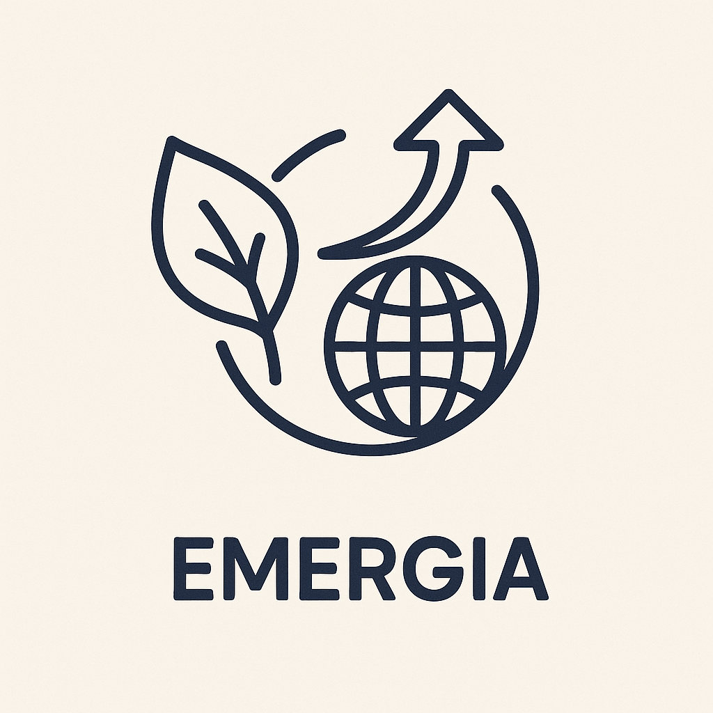

O que é EMERGIA?
A sustentabilidade é um dos grandes desafios do século XXI, especialmente nas instituições de ensino. Para enfrentá-lo, é essencial compreender como usamos energia e recursos naturais. Neste site, você vai aprender de forma visual, interativa e acessível o que é emergia, uma metodologia que avalia os fluxos energéticos de sistemas complexos, ajudando a entender como tornar ambientes como o nosso campus mais sustentáveis. Nosso ponto de partida é o estudo de Di Salvo (2015), que analisa a diferença entre data centers tradicionais e na nuvem com base na emergia. A partir dele, mostramos como aplicar o conceito ao campus UNIP Marquês/Chácara, propondo soluções práticas.
